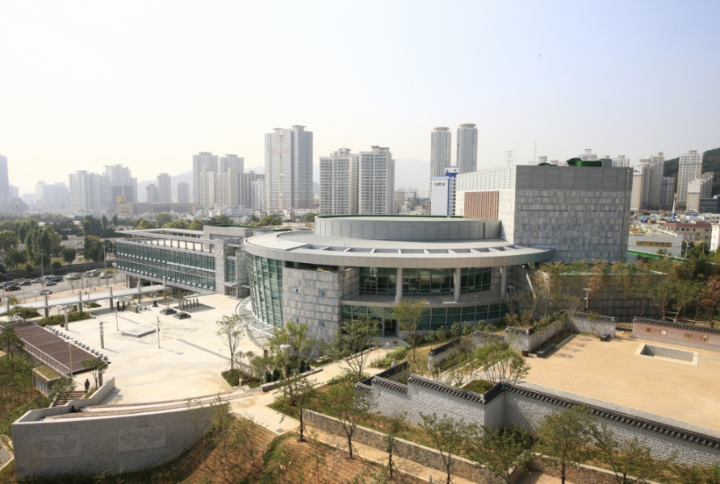
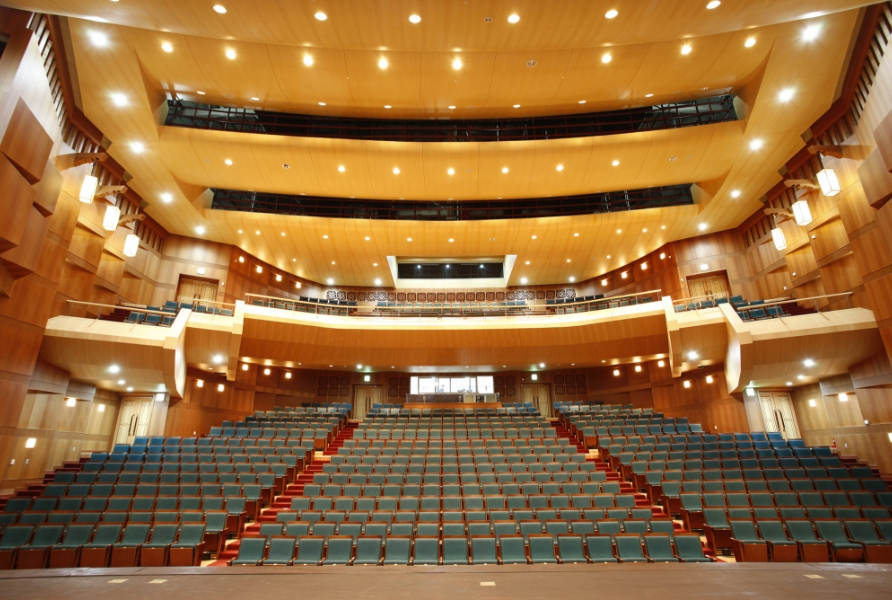
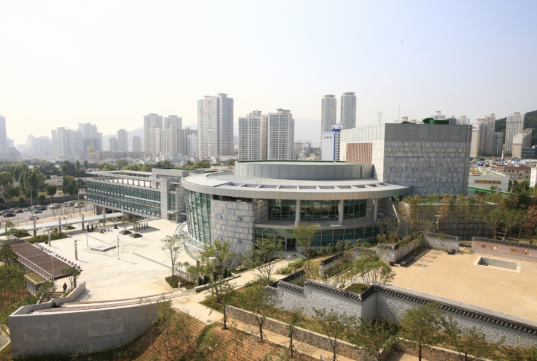
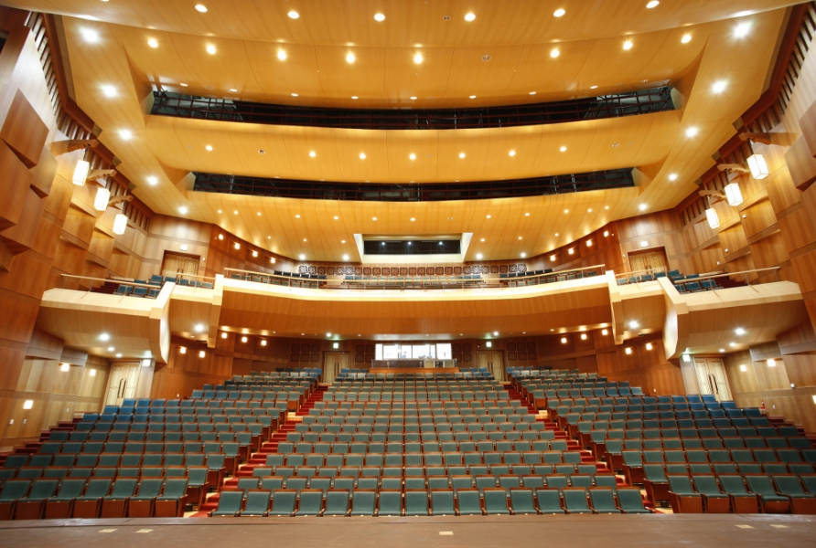
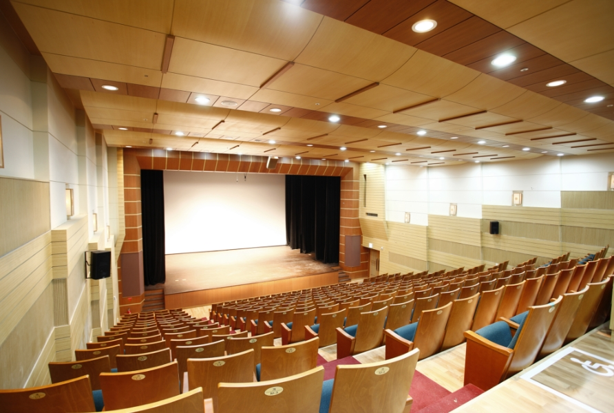

예술감독과 악장 그리고 대한민국 최고의 기량을 자랑하는 50여명의 단원들로 구성된 기악단․성악단은 정악, 민속악, 창작국악을 아우르며 미래의 전통을 이어하고자 한다.
영남지역의 특수성을 살린 전통 음악을 계승․발전시켜 국악의 생활화와 세계화를 위해 힘쓰고 있으며, 완성도 높은 공연을 통해 관객과 함께 호흡할 수 있는 무대를 만들어 가고 있다.
국립부산국악원 소개
국립부산국악원은 부산․영남지역의 전통공연예술을 계승 발전시키기 위해 2008년 10월 28일 개원한 국립문화예술기관이다. 지역의 고유한 정서를 담은 전통공연예술의 아름다움을 새롭게 창출하여 문화발전에 기여하고자 한다.
또한, 고품격의 특화된 공연작품을 개발하여 국제해양문화도시이자 아시아 태평양의 거점도시인 부산의 문화 품격을 높이고, 나아가 한국전통 문화를 세계에 알리는데 앞장설 것이다.
 



국악연주단 소개
기악단/성악단
무용단

예술감독과 안무자 그리고 대한민국 최고의 기량을 자라하는 30여명의 단원으로 구성된 무용단은 정재, 민속무용, 창작무용을 아우르며 전통을 기반으로 한 춤사위를 승․발전시키고자한다.
영남지역의 역동적이고 세련된 춤사위를 널리 알리고자 노력하고 있으며, 몸짓의 언어를 통해 관객과 소통할 수 있는 무대를 만들어가고 있다.
공연장
연악당
프로시니엄 무대를 갖춘 686석(휠체어석 8석 포함)규모의 대극장. 무대면적 1,258㎡. 전통악기인 용고를 형상화 하였으며, 원형구조로 된 내부 공연장의 프로시니엄 아치는 전통 목조양식을 도입하여 한국적인 미를 현대화하였다. 다양한 연출이 가능한 연악당은 회전무대, 승강무대, 측면이동무대 등 다양한 무대전환을 통해 대형세트의 입체적 활용이 가능하다. 공연을 더욱 화려하고 아름답게 표현할 수 있는 무빙, LED 라이트와 다목적 음향기기, UHD(4K) 영상카메라, 4K 레이저프로젝터 등이 설치되어 있다.

예지당
자연의 소리를 그대로 들을 수 있도록 설계된 276석 (휠체어석 3석포함) 규모의 프로시니엄 소극장. 무대면적 231㎡. 전통돌담과 전통가옥의 마루구조를 적용하였으며, 사랑방에서 연주자의 모습을 직접 보는듯한 느낌을 가질 수 있도록 디자인하였다. 우리 악기가 가진 자연의 소리를 그대로 들을 수 있도록 설계되어 연주자와 관객간의 일체감을 높였다. 예술가의 창작활동이 돋보일 수 있는 최적의 음향환경을 통해 현대적 감각을 표현할 수 있다.

야외마당
한국정원과 연계하여 전통과 현대가 어우러진 300여석 규모의 야외공연장

교육체험관
강습실
강습실은 대강습실 2실(266㎡), 중강습실 4실(79㎡),
소강습실 2실(64㎡) 등 총 8개 공간으로 구성되었다.
뛰어난 방음시설을 갖춤에 따라 동시에 최대 8개 교육 프로그램의
진행이 가능하다. 주로 앉아서 연주하는 국악기 특성 상 모든
강습실은 마루형 바닥으로 되어있고, 교육용 국악기가
비치되어 있어 교육에 참여하는 누구나 이용할 수 있다.

디지털 자료 전시 공간
디지털 자료 전시 공간은 교육체험관 제2전시실(지하1층)과 제4전시실(지상1층)에 조성된다. 이 두 공간에서는 국립부산국악원이 수집한 영남의 국악 관련 자료를 디지털 방식으로 열람할 수 있다. 제2전시실은 일반이 쉽고 재밌게 영남 국악 자료를 열람할 수 있도록 인터랙티브 북과 미디어테이블을 활용할 예정이고, 제4전시실은 조금 더 학술적이고 전문적인 자료를 대형 아키이빙 월과 미디어 아트를 통해 열람할 수 있다.
실감 콘텐츠실
실감 콘텐츠실은 교육체험관 제1전시실(지하1층)과 제3전시실 (지상1층)에 조성된다. 실감 콘텐츠실은 국악과 최첨단 IT기술을 융합하여 교육체험관을 방문한 관람객에게 입체적이고 몰입감있는 경험을 선사할 예정이다. 제1전시실에서는 동래학춤, 진주검무 등의 영남 춤을 소재로 한 환상적인 몰입형 실감 영상을 감상할 수 있고, 제2전시실에서는 영남 가면극의 탈을 소재로 재미있는 인터랙티브 체험이 가능하다.
편의시설
북카페
문화예술분야의 1,000여점의 책을 비치한 복합문화공간
카페(이름미정)
교육체험관 1, 2층에 위치한 휴식공간
유료회원(10월 오픈 예정)
다양하고 차별화된 혜택으로 더 큰 만족을 드립니다.
소셜미디어


카카오플러스친구 국립부산국악원
카카오톡 → 국립부산국악원 검색 → 채널 추가하기 - 공연, 교육, 행사, 소식 뉴스레터 및 문자 발송
국립부산국악원 오시는 길
버스
33, 44, 63, 83-1, 103, 179번 국립부산국악원 정류장 하차
지하철
서면, 부전, 부암, 양정역에서 약 20분 소요
1호선
서면역 7번출구 → 롯데백화점 버스정류장 33번 버스
부전역 2번출구 → 부전시장 버스정류장 33번 버스
양정역 5번출구 → 백조아파트 버스정류장 63, 179번 버스
2호선
부암역 7번출구 → 당감입구 버스정류장 33번 버스
서면역 13번출구 → 부전시장입구 버스정류장 103, 83-1번버스
주차장 이용안내
주차요금은 무료입니다.
주차공간이 협소하므로 공연시간대에는 가능한 대중교통을 이용해 주시기 바랍니다.